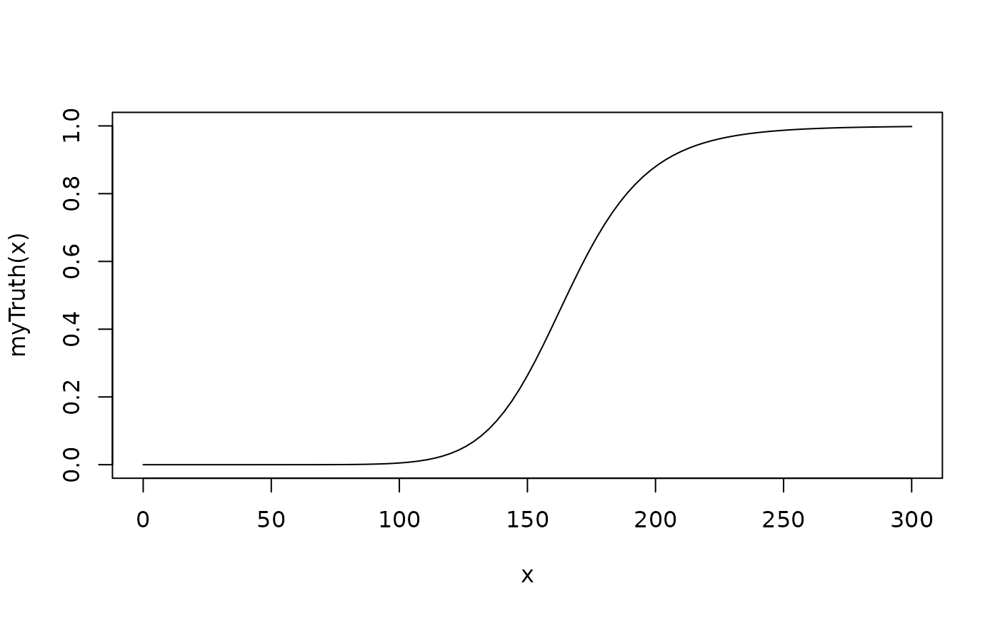

This is a methods to simulate dose escalation procedure only using the DLE responses.
This is a method based on the TDDesign where model used are of
ModelTox class object and no samples are involved.
Source: R/Design-methods.R
simulate-TDDesign-method.RdThis is a methods to simulate dose escalation procedure only using the DLE responses.
This is a method based on the TDDesign where model used are of
ModelTox class object and no samples are involved.
Usage
# S4 method for TDDesign
simulate(
object,
nsim = 1L,
seed = NULL,
truth,
args = NULL,
firstSeparate = FALSE,
parallel = FALSE,
nCores = min(parallel::detectCores(), 5),
...
)Arguments
- object
the
TDDesignobject we want to simulate the data from- nsim
the number of simulations (default :1)
- seed
see
setSeed- truth
a function which takes as input a dose (vector) and returns the true probability (vector) of the occurrence of a DLE. Additional arguments can be supplied in
args.- args
data frame with arguments for the
truthfunction. The column names correspond to the argument names, the rows to the values of the arguments. The rows are appropriately recycled in thensimsimulations. In order to produce outcomes from the posterior predictive distribution, e.g, pass anobjectthat contains the data observed so far,truthcontains theprobfunction from the model inobject, andargscontains posterior samples from the model.- firstSeparate
enroll the first patient separately from the rest of the cohort? (not default) If yes, the cohort will be closed if a DLT occurs in this patient.
- parallel
should the simulation runs be parallelized across the clusters of the computer? (not default)
- nCores
how many cores should be used for parallel computing? Defaults to the number of cores on the machine, maximum 5.
- ...
not used
Examples
# nolint start
##Simulate dose-escalation procedure based only on DLE responses and no DLE samples are used
##The design comprises a model, the escalation rule, starting data,
##a cohort size and a starting dose
##Define your data set first using an empty data set
## with dose levels from 25 to 300 with increments 25
data <- Data(doseGrid=seq(25,300,25))
##The design only incorporate DLE responses and DLE samples are involved
##Specified the model of 'ModelTox' class eg 'LogisticIndepBeta' class model
model<-LogisticIndepBeta(binDLE=c(1.05,1.8),DLEweights=c(3,3),DLEdose=c(25,300),data=data)
##Then the escalation rule
tdNextBest <- NextBestTD(prob_target_drt=0.35,
prob_target_eot=0.3)
doseRecommendation<-nextBest(tdNextBest,
doselimit=max(data@doseGrid),
model=model,
data=data)
#> [1] "TD 35 = 24.9999999999785 not within dose grid"
#> [1] "TD 30 = 14.3714101936777 not within dose grid"
##Then the starting data, an empty data set
emptydata<-Data(doseGrid=seq(25,300,25))
## The cohort size, size of 3 subjects
mySize <-CohortSizeConst(size=3)
##Deifne the increments for the dose-escalation process
##The maximum increase of 200% for doses up to the maximum of the dose specified in the doseGrid
##The maximum increase of 200% for dose above the maximum of the dose specified in the doseGrid
##This is to specified a maximum of 3-fold restriction in dose-esclation
myIncrements<-IncrementsRelative(intervals=c(min(data@doseGrid),max(data@doseGrid)),
increments=c(2,2))
##Specified the stopping rule e.g stop when the maximum sample size of 36 patients has been reached
myStopping <- StoppingMinPatients(nPatients=36)
##Specified the design(for details please refer to the 'TDDesign' example)
design <- TDDesign(model=model,
nextBest=tdNextBest,
stopping=myStopping,
increments=myIncrements,
cohortSize=mySize,
data=data,startingDose=25)
##Specify the truth of the DLE responses
myTruth <- probFunction(model, phi1 = -53.66584, phi2 = 10.50499)
##then plot the truth to see how the truth dose-DLE curve look like
curve(myTruth(x), from=0, to=300,ylim=c(0,1))

##For illustration purpose only 1 simulation is produced (nsim=1).
mySim <- simulate(object=design,
args=NULL,
truth=myTruth,
nsim=1,
seed=819,
parallel=FALSE)
# nolint end